| Download: | matriculation_thesis.pdf |
On 28 December 2011 a landslide of 1.5 million cubic meters broke away from the summit of Piz Cengalo in the south of Graubünden, Switzerland. This was around the time I was finishing high school and thinking about a matriculation project. I set my mind on simulating that landslide and any other landslide or avalanche I could think of. To do that I wanted to code everything myself with C++ and DirectX9, as I was told those were the professional tools. The only problem was that I had barely any experience in both of them. My supervisor Alberto Maraffio, who was a physics teacher with no programming experience, couldn't advise much either in that regard. Nevertheless, he helped me get my hands on a digital height model of Switzerland from the federal office of topography, which didn't come cheap at the time. So, my journey began.
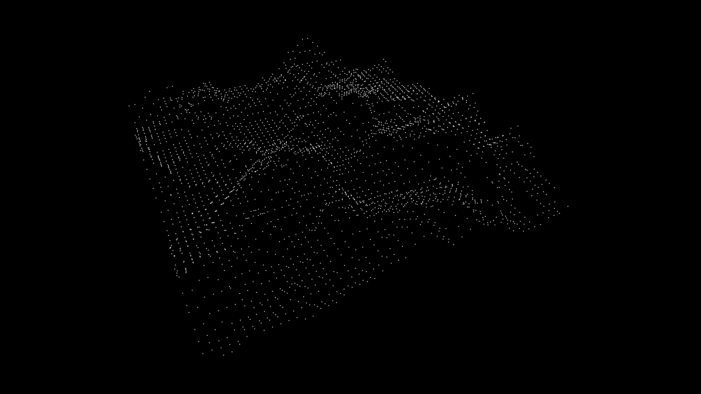 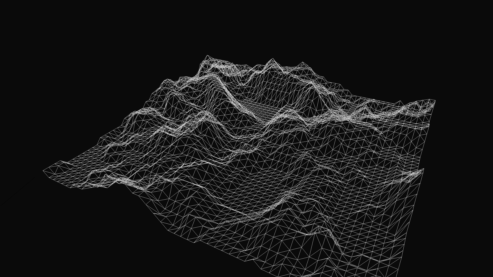 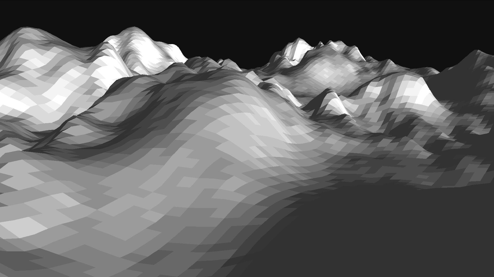 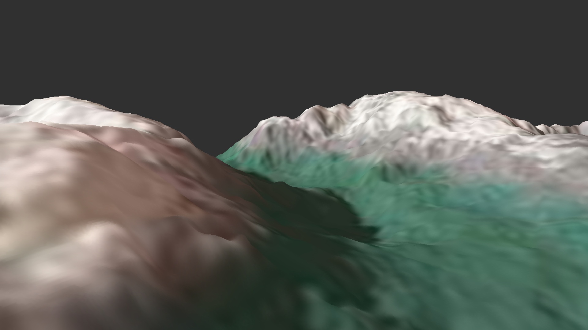It took me about 2 months just to get a mountain rendered on screen. Time during which I probably didn't do a lot of other schoolwork. Then I did the physics simulation, where I went for stones, modelled as simple point masses (thinking that I’d upgrade later on). These exhibited semi-elastic collisions when impacting the ground and friction when gliding along the ground, but did not interact otherwise.
Up until that point I had used a console built into the program to set all kinds of parameters and call functions. This was getting tedious really fast, so I had to implement an UI to make my life easier (Win32 API).
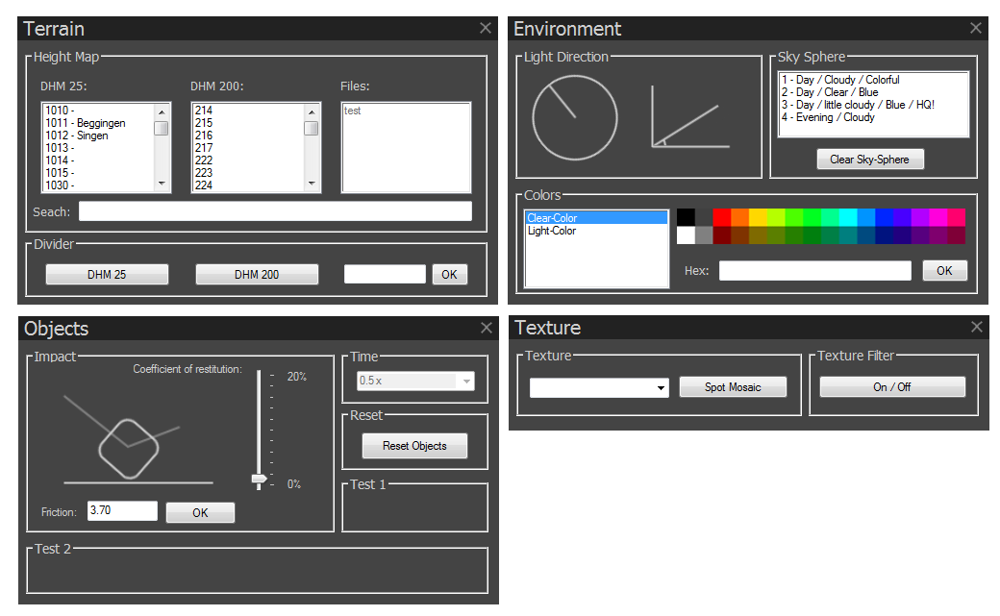At this point my time was already up and I had to submit my project, although I was far from out of ideas on how to proceed. As a last hurrah I loaded up the program and placed 700'000 stones on the Piz Cengalo. The simulation took an entire two hours to complete, but the results look admittedly pretty cool!
To get the starting location of the landslide right and to correctly tune the coefficients of friction & restitution (and because I like to hike), I went on a trip with my family to see the aftermath of the landslide myself. The pictures of that trip are shown here below. Looking back at the simulation now, I did get the starting location slightly wrong, with the real landslide going down only to the left and not splitting up at all.
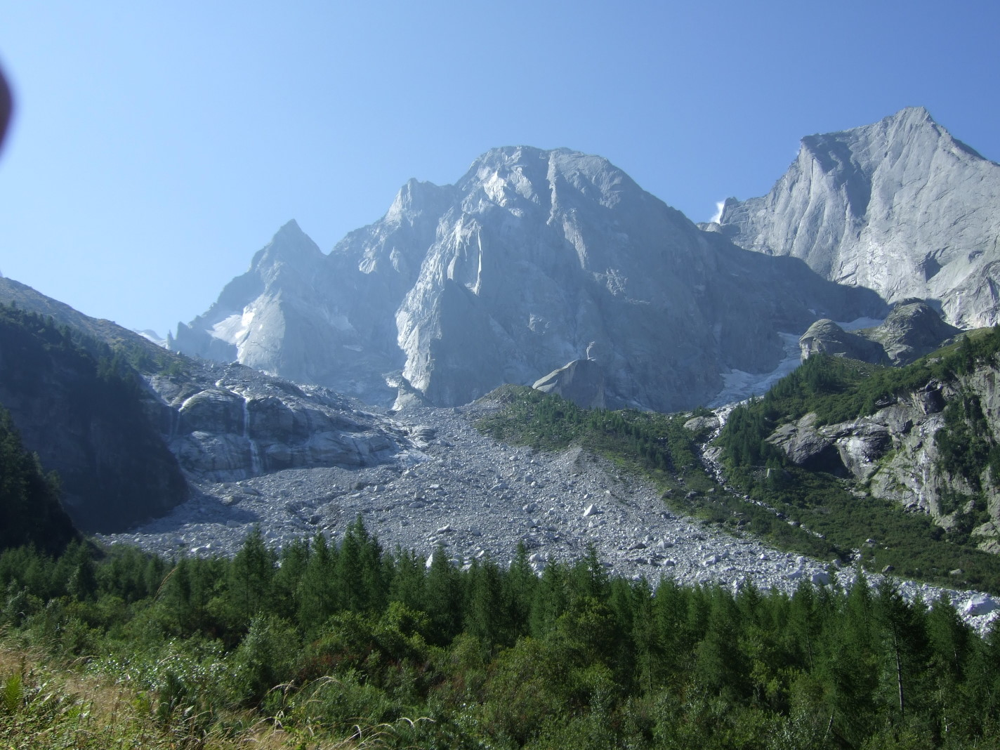 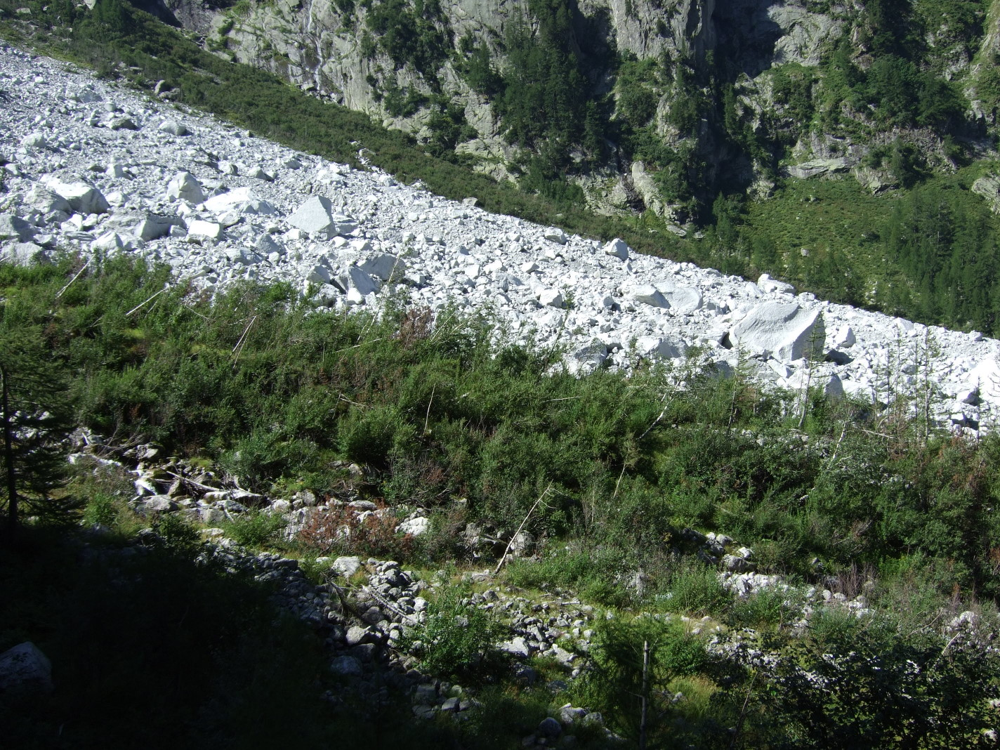 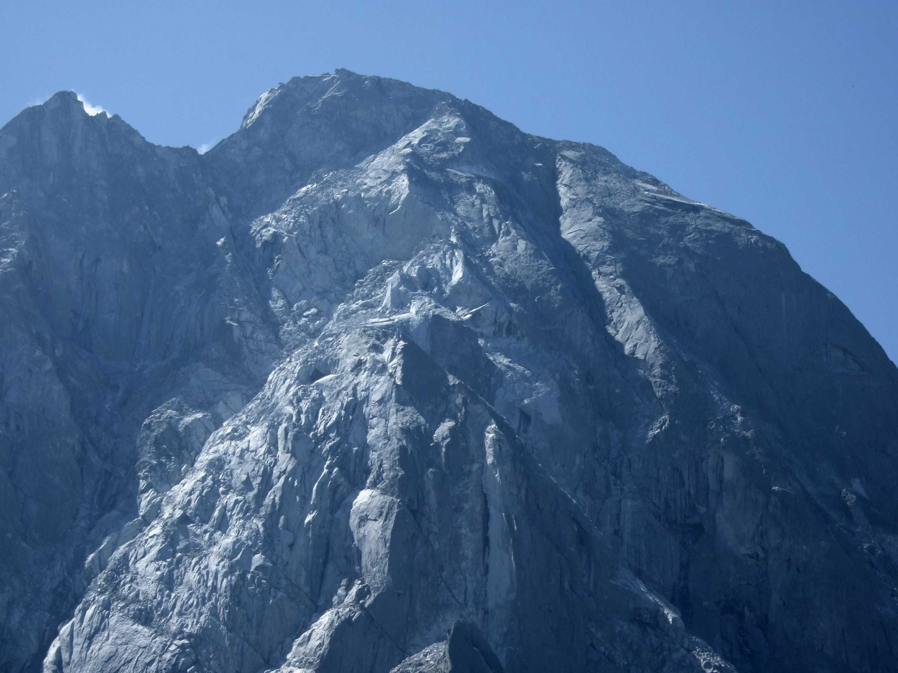 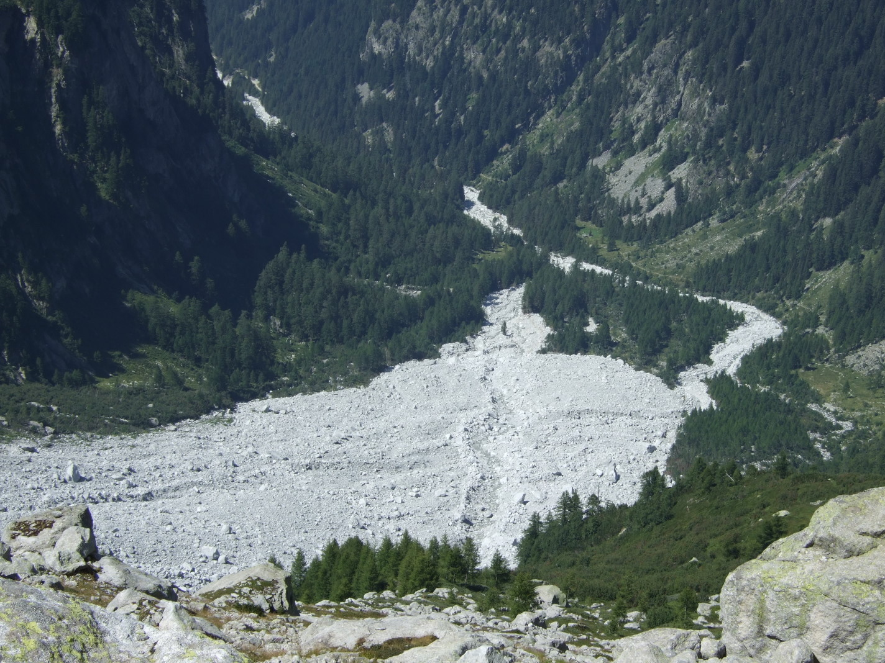 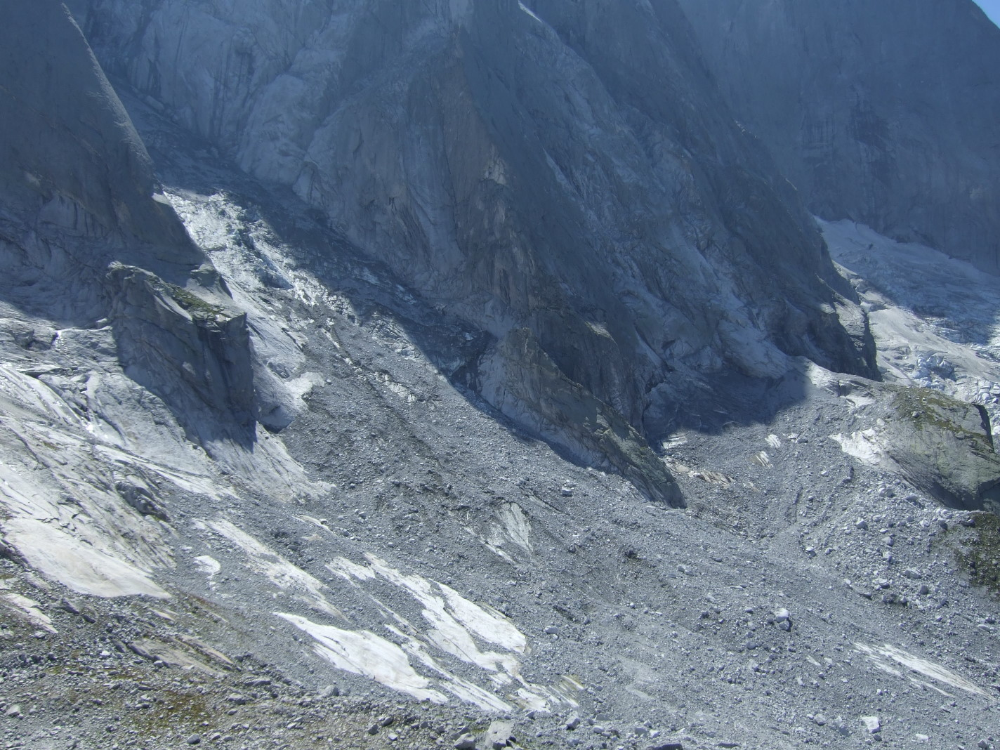 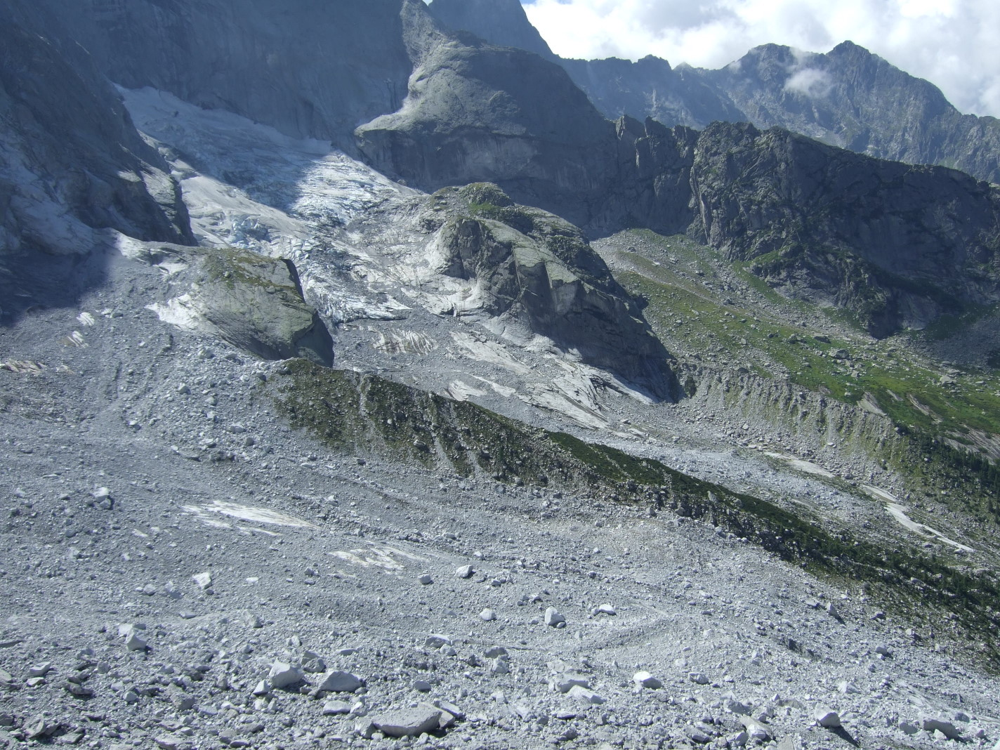While I am happy with the outcome of my matriculation project, it's also true that it wasn't always smooth sailing. Especially the vector math in the physics simulation caused a lot of head scratching. Most of the times the landslide just disappeared when I made a mistake, but sometimes the effects were quite comical.
A few months later I was invited to a poster presentation for matriculation projects at ETH Zürich. I showed up with a big A0 poster that I made just after discovering Adobe Illustrator's Image Trace tool, and with my little RaspberryPi box computer to show a video of the simulation. No pictures of me in that event survived, but I still have the poster and the Pi-Box (see portable computer projects).
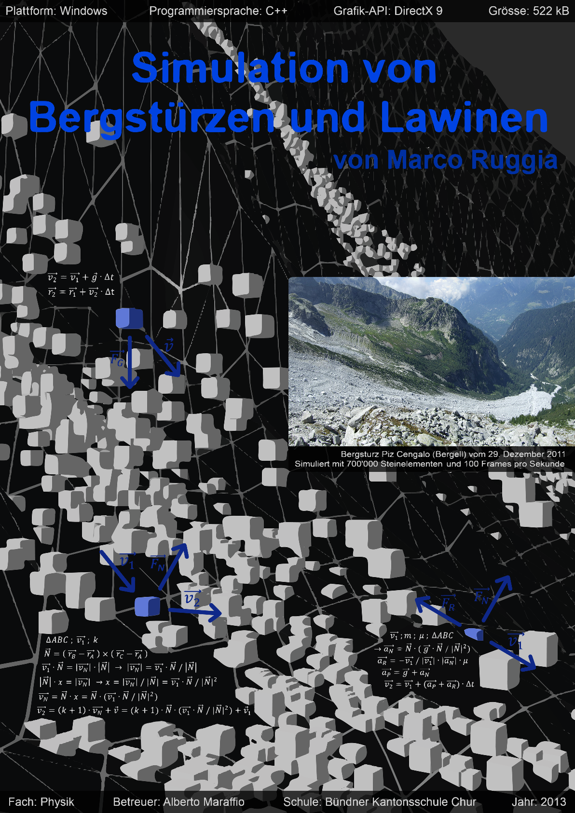| Download: | matriculation_poster.pdf |
After submitting my thesis, I moved on from this project. I went on to start my study in human medicine at the University of Fribourg, before painfully realizing that it was not the right thing for me. Then I started studying mechanical engineering at ETH Zürich, but failed to pass the first year-end exam. To this day I dislike how they treat new students as if they must have a pocket calculator built into their brain. Anyways, I decided to redo the whole year. This meant that I had quite a bit of free time on my hands, so I decided to pick my landslide simulations back up. I started coding from scratch to fix my old mistakes and called this new program Project 2.
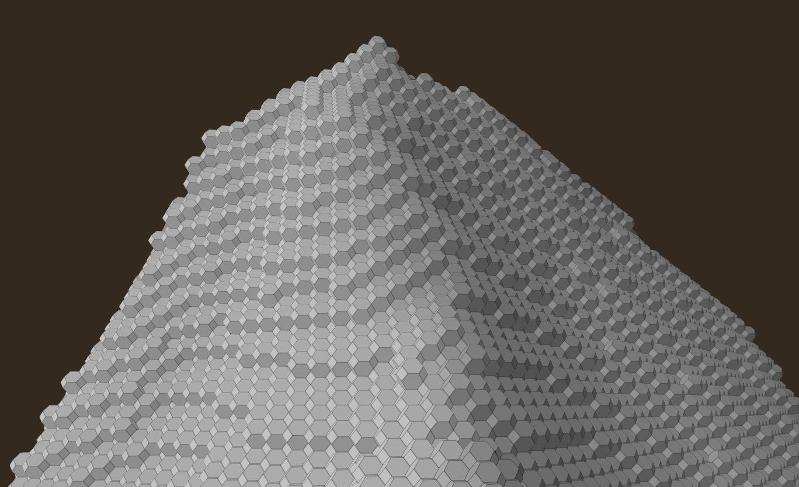In this program I intended to build everything around dodecahedral voxels, simulating interactions between voxels and clusters of voxels breaking apart. Even the ground was supposed to be made from voxels, so that a landslide could rip up and carry with it parts of the ground. It was a very ambitious project, and I did get pretty far, but before reaching my goal the year was already over. On the second try I did pass my university exams. Then the second year started, and I was once again under such pressure that I couldn't think about continuing this project. What remains are 5 short development log videos that I made during that time.